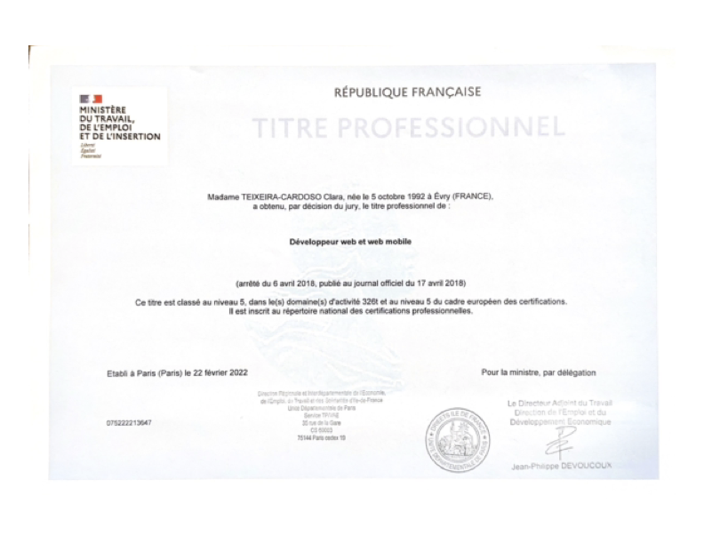

Ma reconversion
Juin 2021, je commence ma formation intense chez
O'clock
pendant 6 mois.
La formation s'achève en apothéose avec la présentation en direct sur YouTube de nos projets de fin
d'étude réalisé en 1 mois.
Pour voir ma présentation c'est par ici
, à 22:27 minutes.
Janvier 2022, je passe et obtiens mon Titre Professionnel de développeuse web et web mobile à Paris. Je
passe également ma certification Opquast pour valider mes connaissances sur les bonnes pratiques du web.
Bref, je suis enfin officiellement une dev junior et fière de l'être !
